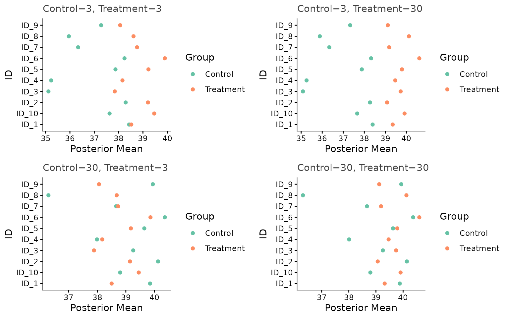
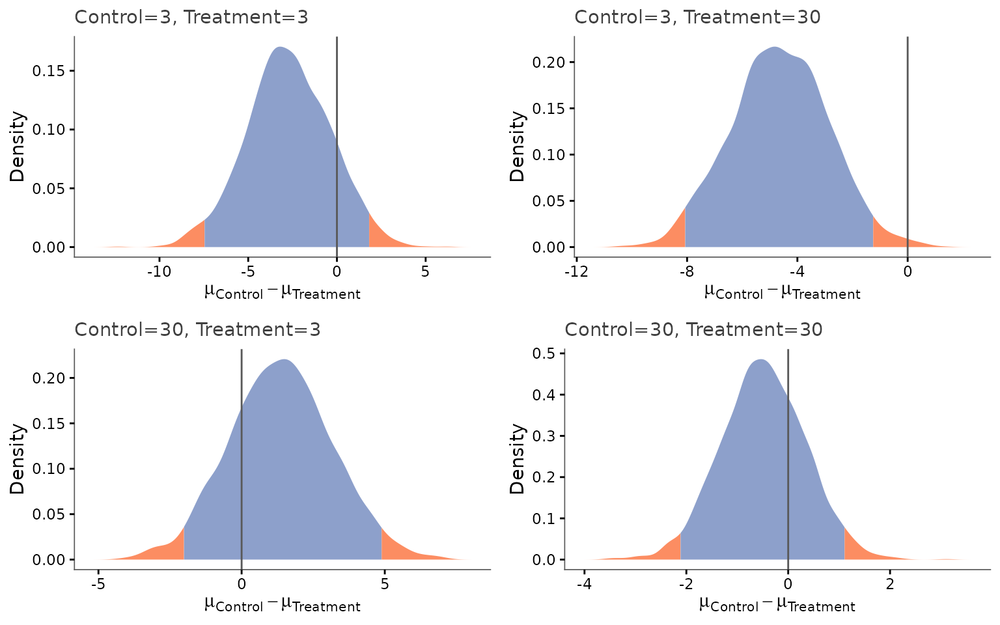
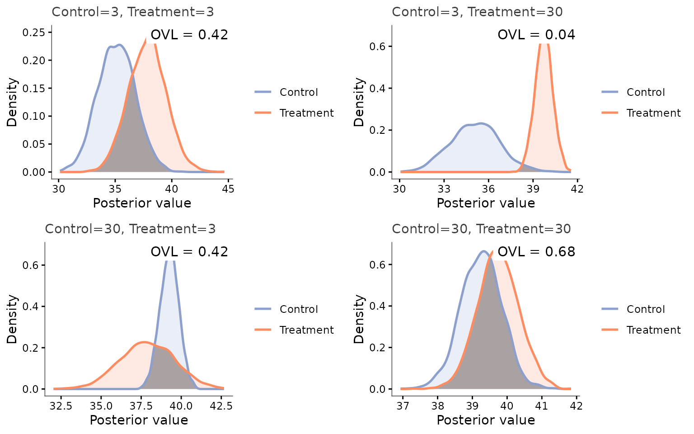

Unbalanced Designs: Differential Analysis with Different Sample Sizes per Group
Source:vignettes/sample_size_scenarios.Rmd
sample_size_scenarios.Rmd
knitr::opts_chunk$set(warning = FALSE, message = FALSE)
library(keRnel)
library(BayesOmics)
library(ggplot2)Groups don’t need the same number of replicates
A common real-world constraint: one condition is cheap/abundant to sample, the other is expensive or rare, so the two groups end up with very different replicate counts. BayesOmics handles this natively. The posterior for a single group is
N (nb_sample) only ever appears through
that group’s own count – nothing here requires the two groups
being compared to share the same N. The
only real requirement is that both groups are measured
at the same Input values, so that they
share the same kernel matrix
(same kernel_key internally) and can be compared at all.
That is also exactly what makes
calculate_group_overlaps()‘s closed-form overlap work when
the two groups’ scales differ
(): same
,
different scaling.
This vignette simulates one fixed, spatially-correlated ground truth
(same Input positions for every group) and varies
how many replicates each group gets, independently of the
other – including strongly unbalanced designs – to
show that the differential analysis still works, and to visualize
exactly what changes.
A fixed ground truth, several (Control, Treatment) sample-size pairs
As in the introductory vignette, the true methylation
profile is itself spatially correlated (drawn from an SE kernel over
genomic position), and Treatment shifts that profile by a fixed amount.
We simulate this ground truth once - a base dataset
with 30 replicates per group, the maximum used in any scenario below -
using simu_db_kernel() with mu_random = TRUE
so that each group draws a genuinely spatially-varying baseline. Each
scenario is then a subset of that base dataset: only the number of
retained replicates changes, and it changes independently per group:
set.seed(42)
profile_kernel <- variance_kernel(variance = 6) * se_kernel(length_scale = 25)
data_base <- simu_db_kernel(
kernel = profile_kernel,
nb_id = 10,
nb_group = 2,
nb_sample = 30,
diff_group = c(0, 2.5),
var_sample = 4,
mu_0 = 40,
mu_random = TRUE,
range_input = c(0, 100),
group_labels = c("Control", "Treatment")
)
ids <- unique(data_base$ID[data_base$Group == "Control"])
build_dataset <- function(nb_sample_control, nb_sample_treatment) {
ctrl <- data_base[data_base$Group == "Control" & data_base$Sample <= nb_sample_control, ]
trt <- data_base[data_base$Group == "Treatment" & data_base$Sample <= nb_sample_treatment, ]
rbind(ctrl, trt)
}
scenarios <- list(
balanced_low = c(Control = 3, Treatment = 3),
treatment_rich = c(Control = 3, Treatment = 30),
control_rich = c(Control = 30, Treatment = 3),
balanced_high = c(Control = 30, Treatment = 30)
)Fitting the kernel once, from a generously-sampled calibration set
A well-specified analysis fits the kernel hyperparameters from data,
combining a signal kernel with a white-noise nugget (exactly as in the
introductory vignette). We do this once, from the full 30-replicate
Control group in data_base, and reuse the same fitted
kernel for every scenario below - this isolates the effect of each
group’s own sample size on the posterior step from any
variation in hyperparameter recovery itself:
se_part <- variance_kernel(variance = 1) * se_kernel(length_scale = 1)
noise_part <- white_noise_kernel(noise = 1)
ker <- se_part + noise_part
control_calib <- data_base[data_base$Group == "Control", ]
prior_mean_est <- mean(control_calib$Output)
hp_opt <- BayesOmics::optim_hp(ker, control_calib, prior_mean = prior_mean_est, prior_cov = 1)
ker_opt <- do.call(kupdate, c(list(ker), as.list(hp_opt)))
hp_opt
#> variance length_scale noise
#> 8.227407 17.282798 2.594269
#> attr(,"convergence")
#> [1] 0
#> attr(,"value")
#> [1] 726.746Now build the posterior and draw samples for every (Control, Treatment) sample-size pair, using that one fitted kernel throughout:
scenario_label <- function(s) sprintf("Control=%d, Treatment=%d", s["Control"], s["Treatment"])
scenario_results <- lapply(scenarios, function(s) {
data <- build_dataset(s["Control"], s["Treatment"])
posterior <- posterior_mean(data, ker_opt, mu_0 = prior_mean_est, lambda_0 = 1)
samples <- sample_posterior(posterior, n = 2000)
list(label = scenario_label(s), nb_control = s["Control"], nb_treatment = s["Treatment"],
posterior = posterior, samples = samples)
})Every scenario above – including the two strongly unbalanced ones –
runs through posterior_mean() and
sample_posterior() without any special-casing.
Each group’s posterior reflects only its own sample size
plot_posterior_mean() shows the posterior mean at every
CpG site for both conditions, across the four scenarios. Each group’s
estimates converge more tightly when it has more replicates - regardless
of how many replicates the other group has:
plots_mean <- lapply(scenario_results, function(res) {
plot_posterior_mean(res$samples) +
ggplot2::ggtitle(res$label)
})
gridExtra::grid.arrange(grobs = plots_mean, nrow = 2, ncol = 2)
In the two unbalanced scenarios (Control=3, Treatment=30
and Control=30, Treatment=3), the group with only 3
replicates shows more dispersion across sites - its posterior is less
concentrated - while the 30-replicate group is already tightly
constrained. Each group’s posterior precision depends only on its
own replicate count - exactly as the formula says - and the
comparison between groups remains entirely valid throughout, because
both still share the same Input (hence the same
).
The posterior difference of means still has a well-defined answer
plot_distrib()’s difference-of-means density for a
single representative site, across the same four (possibly very
unbalanced) scenarios:
focus_id <- ids[3]
plots_diff <- lapply(scenario_results, function(res) {
plot_distrib(res$samples, group1 = "Control", group2 = "Treatment", id = focus_id,
show_prob = FALSE) +
ggtitle(res$label)
})
gridExtra::grid.arrange(grobs = plots_diff, nrow = 2, ncol = 2)
prob_table <- do.call(rbind, lapply(scenario_results, function(res) {
diff_samples <- res$samples$Sample[res$samples$ID == focus_id & res$samples$Group == "Control"] -
res$samples$Sample[res$samples$ID == focus_id & res$samples$Group == "Treatment"]
data.frame(scenario = res$label,
`P(Control <= Treatment)` = round(mean(diff_samples <= 0), 3),
check.names = FALSE)
}))
prob_table
#> scenario P(Control <= Treatment)
#> balanced_low Control=3, Treatment=3 0.871
#> treatment_rich Control=3, Treatment=30 0.995
#> control_rich Control=30, Treatment=3 0.223
#> balanced_high Control=30, Treatment=30 0.722The two unbalanced scenarios (Control=3, Treatment=30
and Control=30, Treatment=3) land at a similar confidence
level to each other – what mostly matters for this comparison is how
much total information is available, not which particular group it came
from.
Seeing the overlap itself, group by group
plot_posterior_overlap() overlays the two groups’
posterior densities directly on the same panel and shades their region
of intersection – exactly the area
calculate_group_overlaps()’s OVL coefficient measures. This
is the most direct way to see an unbalanced comparison still work
cleanly: one curve can be visibly wider than the other, and the shaded
overlap is still well defined.
plots_overlap <- lapply(scenario_results, function(res) {
plot_posterior_overlap(res$samples, group1 = "Control", group2 = "Treatment", id = focus_id) +
ggtitle(res$label)
})
gridExtra::grid.arrange(grobs = plots_overlap, nrow = 2, ncol = 2)
In the unbalanced panels, the narrower curve belongs to whichever
group happens to have more replicates in that scenario – Treatment in
Control=3, Treatment=30, Control in
Control=30, Treatment=3 – while the wider curve’s group is
exactly the one with fewer replicates. The shaded overlap is computed
from both curves together regardless.
The region-wide differential call, across all four scenarios
Finally, calculate_group_overlaps()’s single OVL number
per scenario, computed from the full, multivariate posterior profile
(all 10 sites at once, accounting for their spatial correlation) – this
is the closed-form, unequal-scale branch of the overlap formula doing
the work whenever Control and Treatment have different replicate
counts:
ovl_df <- do.call(rbind, lapply(scenario_results, function(res) {
mat <- calculate_group_overlaps(res$posterior)
data.frame(label = res$label, OVL = mat["Control", "Treatment"])
}))
ovl_df$label <- factor(ovl_df$label, levels = vapply(scenarios, scenario_label, character(1)))
ovl_df
#> label OVL
#> balanced_low Control=3, Treatment=3 1.014875e-01
#> treatment_rich Control=3, Treatment=30 9.053884e-05
#> control_rich Control=30, Treatment=3 7.791784e-04
#> balanced_high Control=30, Treatment=30 4.920751e-07All four scenarios – including the two strongly unbalanced ones –
produce a valid, well-defined region-wide call.
balanced_low (3 and 3 replicates) is the least informative,
balanced_high (30 and 30) the most; the two unbalanced
scenarios sit in between, reflecting that the comparison is only as
precise as its least well-sampled group, while still being
perfectly valid to compute.
Takeaways
The only hard requirement to compare two groups with
calculate_group_overlaps() is that they share the same
Input values (same kernel_key); their
replicate counts (nb_sample) can differ freely. Each
group’s posterior precision depends only on its own sample size
(scale = nb_sample + lambda_0 in
posterior_mean()‘s output) - adding replicates to one group
never changes the other group’s uncertainty. When the two groups’ scales
differ, calculate_group_overlaps() automatically uses the
exact closed-form overlap for unequal-scale Gaussians (see
?calculate_group_overlaps) - this is what made every
unbalanced scenario above work without any special handling. In
practice, you do not need to discard “extra” replicates from a richer
group, or wait until both groups are equally sampled, to run a valid
differential analysis.
Go further
| Vignette | What you will find |
|---|---|
vignette("omics-analysis") |
The complete model walkthrough - kernel choice, hyperparameter fitting, posterior computation, and every plot function - on both a two-group and a multi-group example. Read this first if you are new to the package. |
vignette("troubleshooting") |
Exact error messages you may encounter (non-convergence, mismatched IDs, ill-conditioned matrices, and more), what causes each of them, and the targeted fix. |